🌸 巴塞罗那
Barcelona · 设计：Dani Garcia · Board&Dice 出版（中文版：三局两胜工作室）
本页整理自《巴塞罗那》（Barcelona，Dani Garcia 设计，Board&Dice 出版）官方中文规则书（中文版：三局两胜工作室），共 19 页正文逐页转录，并在对应章节嵌入原书扫描页供对照——点击任意扫描页即可放大查看。文末另附盒内「快速参考」页的转录。规则内容归版权方所有，转录仅供个人学习查阅。
整理说明：扫描页经 OCR 与人工双遍校验转录。原书用词不一处照录（如「十字路口/交叉路口」「主版图/主板图」「圣家堂/圣家族大教堂」）；明显误印已径改并在下注列出。原书第 6 页回合步骤 3 印作「检查是否触发了计分阶」（脱「段」字）、第 15 页示例算式印作「3角落建筑×1角落建筑×1」（脱「VP」字），均按原书照录并以〔原书如此〕标注。个别无法确认处以〔?〕标注。
背景介绍（第 1 页）
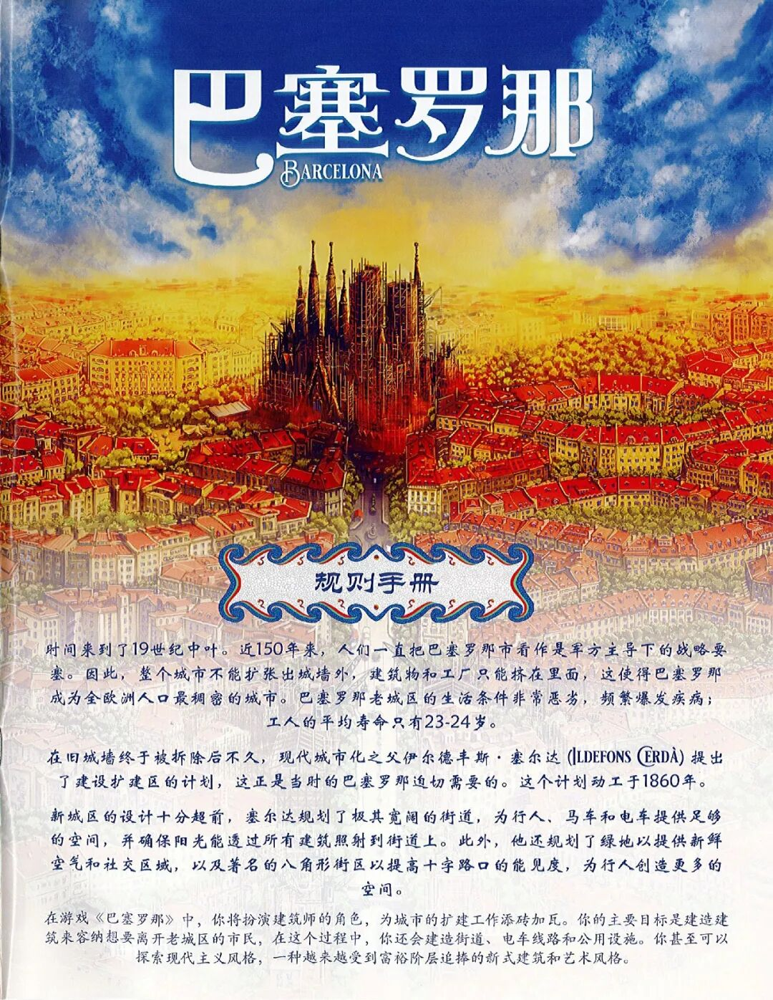
时间来到了 19 世纪中叶。近 150 年来，人们一直把巴塞罗那市看作是军方主导下的战略要塞。因此，整个城市不能扩张出城墙外，建筑物和工厂只能挤在里面，这使得巴塞罗那成为全欧洲人口最稠密的城市。巴塞罗那老城区的生活条件非常恶劣，频繁爆发疾病；工人的平均寿命只有 23-24 岁。
在旧城墙终于被拆除后不久，现代城市化之父伊尔德丰斯·塞尔达（ILDEFONS CERDÀ）提出了建设扩展区的计划，这正是当时的巴塞罗那迫切需要的。这个计划动工于 1860 年。
新城区的设计十分超前，塞尔达规划了极其宽阔的街道，为行人、马车和电车提供足够的空间，并确保阳光能透过所有建筑照射到街道上。此外，他还规划了绿地以提供新鲜空气和社交区域，以及著名的八角形街区以提高十字路口的能见度，为行人创造更多的空间。
在游戏《巴塞罗那》中，你将扮演建筑师的角色，为城市的扩建工作添砖加瓦。你的主要目标是建造建筑来接纳想要离开老城区的市民，在这个过程中，你还会建造街道、电车线路和公用设施。你甚至可以探索现代主义风格，一种越来越受到富裕阶层追捧的新式建筑和艺术风格。
游戏配件（第 2–3 页）
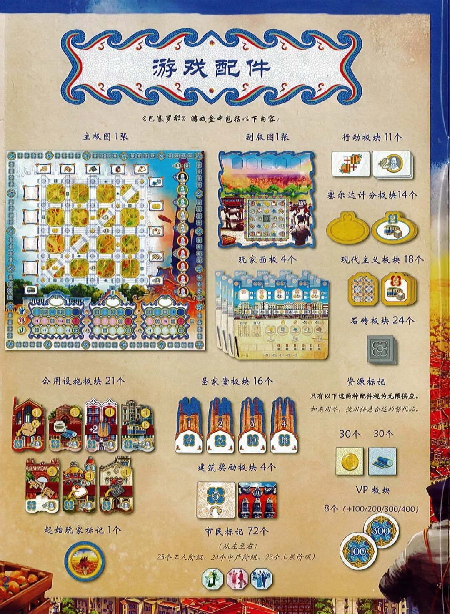
《巴塞罗那》游戏盒中包括以下内容：
- 主版图 1 张
- 副版图 1 张
- 行动板块 11 个
- 玩家面板 4 个
- 塞尔达计分板块 14 个
- 现代主义板块 18 个
- 石砖板块 24 个
- 公用设施板块 21 个
- 圣家堂板块 16 个
- 建筑奖励板块 4 个
- 资源标记：金币 30 个、布匹 30 个（只有以下这两种配件视为无限供应。如果用尽，使用任意合适的替代品。）
- VP 板块 8 个（+100/200/300/400）
- 起始玩家标记 1 个
- 市民标记 72 个（从左至右：25 个工人阶级、24 个中产阶级、23 个上层阶级）
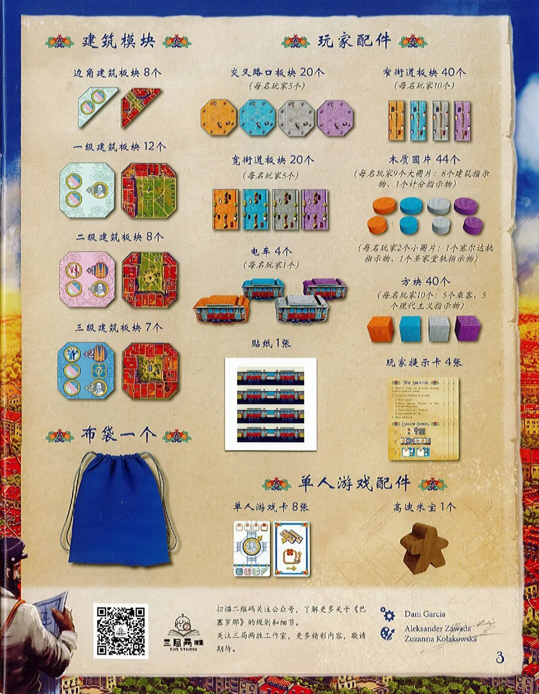
建筑模块
- 边角建筑板块 8 个
- 一级建筑板块 12 个
- 二级建筑板块 8 个
- 三级建筑板块 7 个
玩家配件
- 交叉路口板块 20 个（每名玩家 5 个）
- 窄街道板块 40 个（每名玩家 10 个）
- 宽街道板块 20 个（每名玩家 5 个）
- 电车 4 个（每名玩家 1 个）
- 贴纸 1 张
- 木质圆片 44 个（每名玩家 9 个大圆片：8 个建筑指示物、1 个计分指示物；每名玩家 2 个小圆片：1 个塞尔达轨指示物、1 个圣家堂轨指示物）
- 方块 40 个（每名玩家 10 个：5 个乘客、5 个现代主义指示物）
- 玩家提示卡 4 张
- 布袋 1 个
单人游戏配件
- 单人游戏卡 8 张
- 高迪米宝 1 个
游戏设置（第 4–5 页）
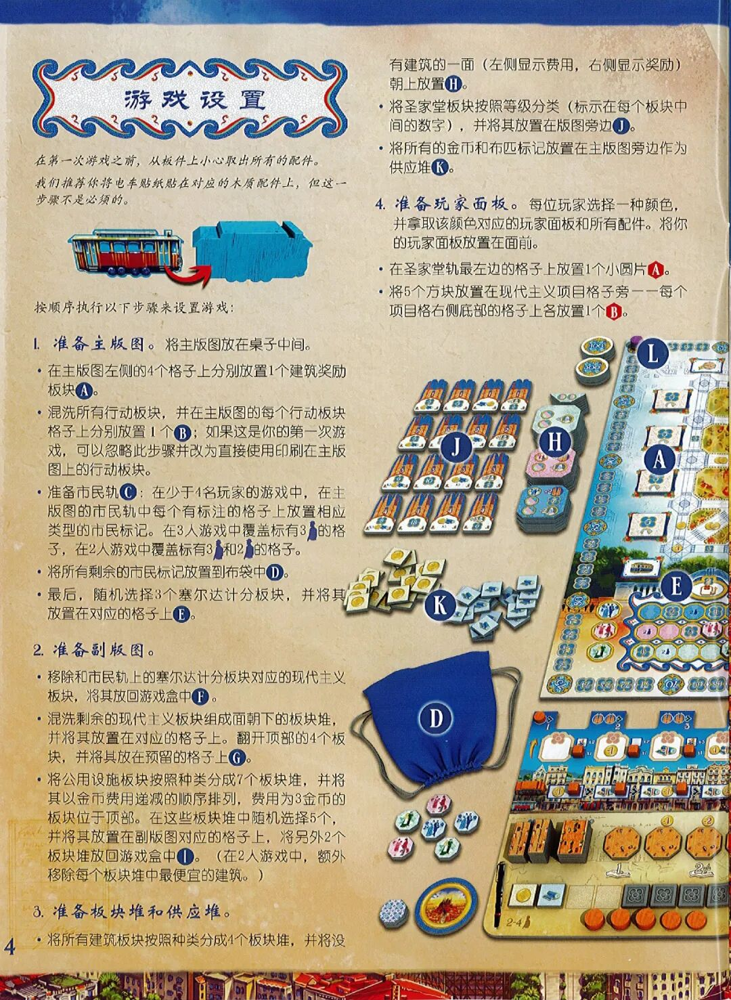
在第一次游戏之前，从板件上小心取出所有的配件。我们推荐你将电车贴纸贴在对应的木质配件上，但这一步骤不是必须的。
按顺序执行以下步骤来设置游戏：
- 准备主版图。将主版图放在桌子中间。
- 在主版图左侧的 4 个格子上分别放置 1 个建筑奖励板块 A。
- 混洗所有行动板块，并在主版图的每个行动板块格子上分别放置 1 个 B；如果这是你的第一次游戏，可以忽略此步骤并改为直接使用印刷在主版图上的行动板块。
- 准备市民轨 C：在少于 4 名玩家的游戏中，在主版图的市民轨中每个有标注的格子上放置相应类型的市民标记。在 3 人游戏中覆盖标有 3〔工人图标〕的格子，在 2 人游戏中覆盖标有 3〔工人图标〕和 2〔中产图标〕的格子。
- 将所有剩余的市民标记放置到布袋中 D。
- 最后，随机选择 3 个塞尔达计分板块，并将其放置在对应的格子上 E。
- 准备副版图。
- 移除和市民轨上的塞尔达计分板块对应的现代主义板块，将其放回游戏盒中 F。
- 洗混剩余的现代主义板块组成面朝下的板块堆，并将其放置在对应的格子上。翻开顶部的 4 个板块，并将其放在预留的格子上 G。
- 将公用设施板块按照种类分成 7 个板块堆，并将其以金币费用递减的顺序排列，费用为 3 金币的板块位于顶部。在这些板块堆中随机选择 5 个，并将其放置在副版图对应的格子上，将另外 2 个板块堆放回游戏盒中 I。（在 2 人游戏中，额外移除每个板块堆中最便宜的建筑。）
- 准备板块堆和供应堆。
- 将所有建筑板块按照种类分成 4 个板块堆，并将没有建筑的一面（左侧显示费用，右侧显示奖励）朝上放置 H。
- 将圣家堂板块按照等级分类（标示在每个板块中间的数字），并将其放置在版图旁边 J。
- 将所有的金币和布匹标记放置在主版图旁边作为供应堆 K。
- 准备玩家面板。每位玩家选择一种颜色，并拿取该颜色对应的玩家面板和所有配件。将你的玩家面板放置在面前。
- 在圣家堂轨最左边的格子上放置 1 个小圆片 A。
- 将 5 个方块放置在现代主义项目格子旁——每个项目格右侧底部的格子上各放置 1 个 B。
- 准备进行第一回合。
- 每名玩家将其剩余的大圆片放置在主版图计分轨「0」的格子上 L，并将其剩余的小圆片放置在主版图塞尔达轨的起始格子上 M。
- 以任意方式决定起始玩家，并给予其起始玩家标记。
- 最后，每名玩家从布袋中抽取 2 个市民标记并将其面朝下放置在自己的玩家面板附近。你可以随时查看它们，但不要展示给其他玩家。
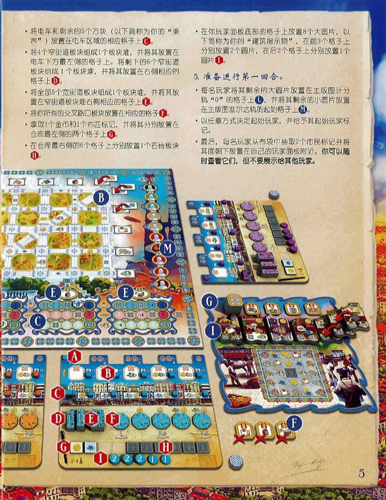
游戏流程（第 6 页）
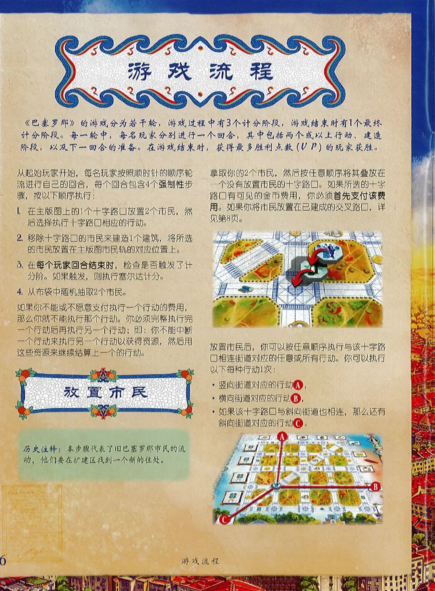
《巴塞罗那》的游戏分为若干轮，游戏过程中有 3 个计分阶段，游戏结束时有 1 个最终计分阶段。每一轮中，每名玩家分别进行一个回合，其中包括两个或以上行动、建造阶段，以及下一回合的准备。在游戏结束时，获得最多胜利点数（VP）的玩家获胜。
从起始玩家开始，每名玩家按照顺时针的顺序轮流进行自己的回合，每个回合包含 4 个强制性步骤，按以下顺序执行：
- 在主版图上的 1 个十字路口放置 2 个市民，然后选择执行十字路口相应的行动。
- 移除十字路口的市民来建造 1 个建筑，将所选的市民放置在主版图市民轨的对应位置上。
- 在每个玩家回合结束时，检查是否触发了计分阶〔原书如此，脱「段」字〕。如果触发，则执行塞尔达计分。
- 从布袋中随机抽取 2 个市民。
如果你不能或不愿意支付执行一个行动的费用，那么你就不能执行那个行动。你必须完整执行完一个行动后再执行另一个行动；即：你不能中断一个行动来执行另一个行动以获得资源，然后用这些资源来继续结算上一个的行动。
放置市民
拿取你的 2 个市民，然后按任意顺序将其叠放在一个没有放置市民的十字路口。如果所选的十字路口有可见的金币费用，你必须首先支付该费用。如果你将市民放置在已建成的交叉路口，详见第 8 页。
放置市民后，你可以按任意顺序执行与该十字路口相连街道对应的任意或所有行动。你可以执行以下每种行动 1 次：
- 竖向街道对应的行动 A，
- 横向街道对应的行动 B，
- 如果该十字路口与斜向街道也相连，那么还有斜向街道对应的行动 C。
📜 历史注释
本步骤代表了旧日巴塞罗那市民的流动，他们要在扩建区找到一个新的住处。
行动详解（第 7–11 页）
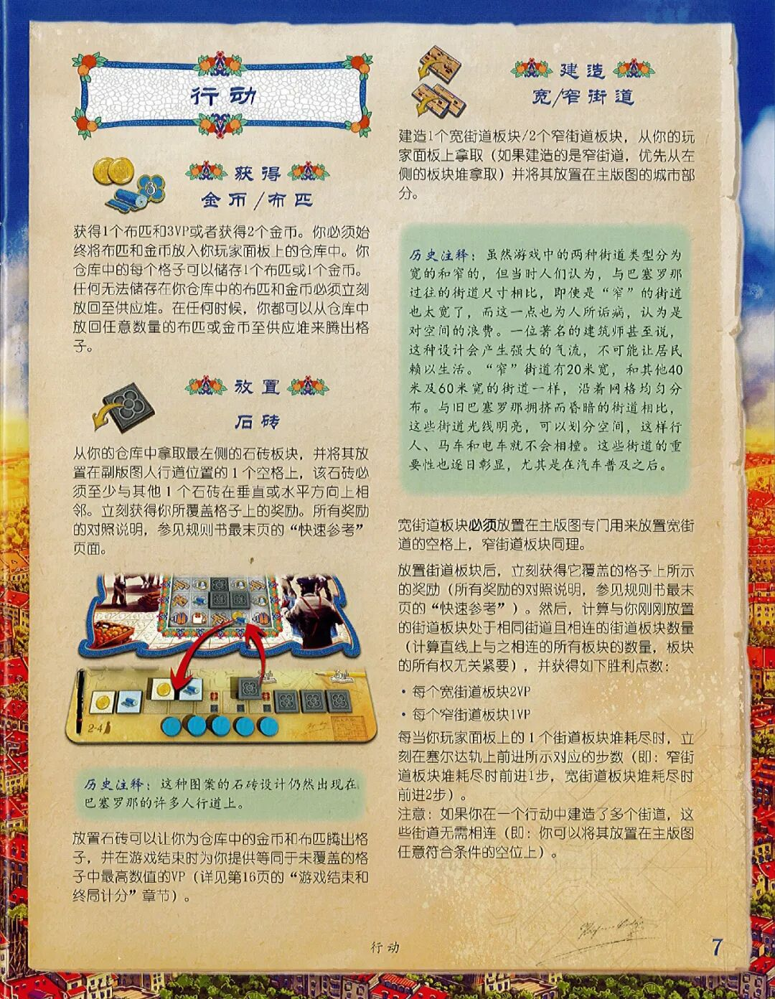
获得 金币/布匹
获得 1 个布匹和 3VP 或者获得 2 个金币。你必须始终将布匹和金币放入你玩家面板上的仓库中。你仓库中的每个格子可以储存 1 个布匹或 1 个金币。任何无法储存在你仓库中的布匹和金币必须立刻放回至供应堆。在任何时候，你都可以从仓库中放回任意数量的布匹或金币至供应堆来腾出格子。
放置 石砖
从你的仓库中拿取最左侧的石砖板块，并将其放置在副版图人行道位置的 1 个空格上，该石砖必须至少与其他 1 个石砖在垂直或水平方向上相邻。立刻获得你所覆盖格子上的奖励。所有奖励的对照说明，参见规则书最末页的「快速参考」页面。
📜 历史注释
这种图案的石砖设计仍然出现在巴塞罗那的许多人行道上。
放置石砖可以让你为仓库中的金币和布匹腾出格子，并在游戏结束时为你提供等同于未覆盖的格子中最高数值的 VP（详见第 16 页的「游戏结束和终局计分」章节）。
建造 宽/窄街道
建造 1 个宽街道板块/2 个窄街道板块，从你的玩家面板上拿取（如果建造的是窄街道，优先从左侧的板块堆拿取）并将其放置在主版图的城市部分。
📜 历史注释
虽然游戏中的两种街道类型分为宽的和窄的，但当时人们认为，与巴塞罗那过往的街道尺寸相比，即使是「窄」的街道也太宽了，而这一点也为人所诟病，认为是对空间的浪费。一位著名的建筑师甚至说，这种设计会产生强大的气流，不可能让居民赖以生活。「窄」街道有 20 米宽，和其他 40 米及 60 米宽的街道一样，沿着网格均匀分布。与旧巴塞罗那拥挤而昏暗的街道相比，这些街道光线明亮，可以划分空间，这样行人、马车和电车就不会相撞。这些街道的重要性也逐日彰显，尤其是在汽车普及之后。
宽街道板块必须放置在主版图专门用来放置宽街道的空格上，窄街道板块同理。
放置街道板块后，立刻获得它覆盖的格子上所示的奖励（所有奖励的对照说明，参见规则书最末页的「快速参考」）。然后，计算与你刚刚放置的街道板块处于相同街道且相连的街道板块数量（计算直线上与之相连的所有板块的数量，板块的所有权无关紧要），并获得如下胜利点数：
- 每个宽街道板块 2VP
- 每个窄街道板块 1VP
每当你玩家面板上的 1 个街道板块堆耗尽时，立刻在塞尔达轨上前进所示对应的步数（即：窄街道板块堆耗尽时前进 1 步，宽街道板块堆耗尽时前进 2 步）。
注意：如果你在一个行动中建造了多个街道，这些街道无需相连（即：你可以将其放置在主版图任意符合条件的空位上）。
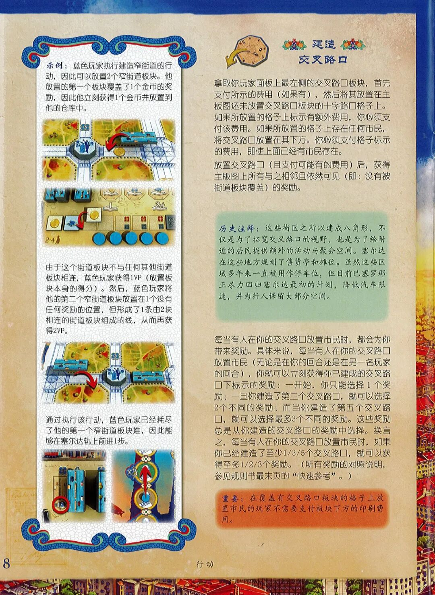
🔹 示例（第 8 页左栏）
蓝色玩家执行建造窄街道的行动，因此可以放置 2 个窄街道板块。他放置的第一个板块覆盖了 1 个金币的奖励，因此他立刻获得 1 个金币并放置到他的仓库中。由于这个街道板块不与任何其他街道板块相连，蓝色玩家获得 1VP（放置板块本身的得分）。然后，蓝色玩家将他的第二个窄街道板块放置在 1 个没有任何奖励的位置，但形成了 1 条由 2 块相连的街道板块组成的线，从而再获得 2VP。通过执行该行动，蓝色玩家已经耗尽了他的第一个窄街道板块堆，因此能够在塞尔达轨上前进 1 步。
建造交叉路口
拿取你玩家面板上最左侧的交叉路口板块，首先支付所示的费用（如果有），然后将其放置在主版图还未放置交叉路口板块的十字路口格子上。如果所放置的格子上标示有额外费用，你必须支付该费用。如果所放置的格子上存在任何市民，将交叉路口放置在其下方。你必须支付格子标示的费用，即使上面已经有市民存在。
放置交叉路口（且支付可能有的费用）后，获得主版图上所有与之相邻且依然可见（即：没有被街道板块覆盖）的奖励。
📜 历史注释
这些街区之所以建成八角形，不仅是为了拓宽交叉路口的视野，也是为了给附近的居民提供额外的活动与聚会空间。塞尔达在这些地方规划了售货亭和摊位。虽然这些区域多年来一直被用作停车位，但目前巴塞罗那正尽力回归塞尔达最初的计划，降低汽车限速，并为行人保留大部分空间。
每当有人在你的交叉路口放置市民时，都会为你带来奖励。具体来说，每当有人在你的交叉路口放置市民（无论是在你的回合还是在另一名玩家的回合），你就可以立刻获得你已建成的交叉路口下标示的奖励：一开始，你只能选择 1 个奖励；一旦你建造了第三个交叉路口，就可以选择 2 个不同的奖励；而当你建造了第五个交叉路口，就可以选择最多 3 个不同的奖励。这些奖励总是从你建造的交叉路口的奖励中选择。换言之，每当有人在你的交叉路口放置市民时，如果你已经建造了至少 1/3/5 个交叉路口，就可以获得至多 1/2/3 个奖励。（所有奖励的对照说明，参见规则书最末页的「快速参考」。）
⚠️ 重要
在覆盖有交叉路口板块的格子上放置市民的玩家不需要支付板块下方的印刷费用。
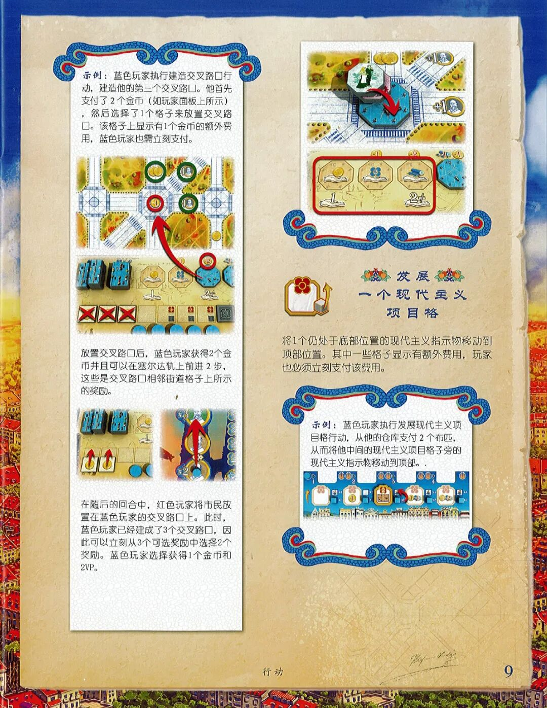
🔹 示例（第 9 页左栏）
蓝色玩家执行建造交叉路口行动，建造他的第三个交叉路口。他首先支付了 2 个金币（如玩家面板上所示），然后选择了 1 个格子来放置交叉路口。该格子上显示有 1 个金币的额外费用，蓝色玩家也需立刻支付。放置交叉路口后，蓝色玩家获得 2 个金币并且可以在塞尔达轨上前进 2 步，这些是交叉路口相邻街道格子上所示的奖励。在随后的回合中，红色玩家将市民放置在蓝色玩家的交叉路口上。此时，蓝色玩家已经建造了 3 个交叉路口，因此可以立刻从 3 个可选奖励中选择 2 个奖励。蓝色玩家选择获得 1 个金币和 2VP。
发展 一个现代主义项目格
将 1 个仍处于底部位置的现代主义指示物移动到顶部位置。其中一些格子显示有额外费用，玩家也必须立刻支付该费用。
🔹 示例
蓝色玩家执行发展现代主义项目格行动，从他的仓库支付 2 个布匹，从而将他中间的现代主义项目格子旁的现代主义指示物移动到顶部。
现代主义指示物表示了游戏结束时你通过每个现代主义板块得分的倍数。相比起位于底部，位于顶部的指示物总能够使现代主义板块获取更多分数。
现代主义指示物总是可以移动至其顶部，无论其相应的格子上是否存在现代主义板块。
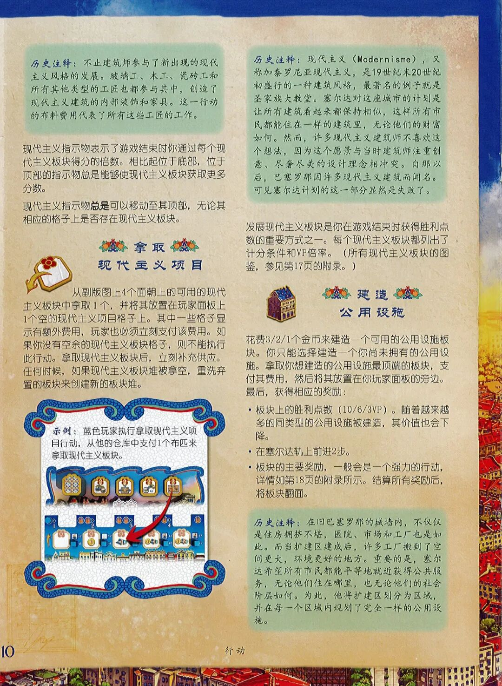
拿取 现代主义项目
从副版图上 4 个面朝上的可用的现代主义板块中拿取 1 个，并将其放置在玩家面板上 1 个空的现代主义项目格子上。其中一些格子显示有额外费用，玩家也必须立刻支付该费用。如果你没有空余的现代主义板块格子，则不能执行此行动。拿取现代主义板块后，立刻补充供应。任何时候，如果现代主义板块堆被拿空，重洗弃置的板块来创建新的板块堆。
🔹 示例
蓝色玩家执行拿取现代主义项目行动，从他的仓库中支付 1 个布匹来拿取现代主义板块。
📜 历史注释
现代主义（Modernisme），又称加泰罗尼亚现代主义，是 19 世纪末 20 世纪初盛行的一种建筑风格，最著名的例子就是圣家族大教堂。塞尔达对这座城市的计划是让所有建筑看起来都保持相似，这样所有市民都能住在一样的建筑里，无论他们的财富如何。然而，许多现代主义建筑师不喜欢这个想法，因为这个愿景与当时建筑师注重创意、尽奢尽美的设计理念相冲突。自那以后，巴塞罗那因许多现代主义建筑而闻名。可见塞尔达计划的这一部分显然是失败了。
发展现代主义板块是你在游戏结束时获得胜利点数的重要方式之一。每个现代主义板块都列出了计分条件和 VP 倍率。（所有现代主义板块的图鉴，参见第 17 页的附录。）
建造 公用设施
花费 3/2/1 个金币来建造一个可用的公用设施板块。你只能选择建造一个你尚未拥有的公用设施。拿取你想建造的公用设施最顶端的板块，支付其费用，然后将其放置在你玩家面板的旁边。最后，获得相应的奖励：
- 板块上的胜利点数（10/6/3VP）。随着越来越多的同类型的公用设施被建造，其价值也会下降。
- 在塞尔达轨上前进 2 步。
- 板块的主要奖励，一般会是一个强力的行动，详情如第 18 页的附录所示。结算所有奖励后，将板块翻面。
📜 历史注释
不止建筑师参与了新出现的现代主义风格的发展。玻璃工、木工、瓷砖工和所有其他类型的工匠也都参与其中，创造了现代主义建筑的内部装饰和家具。这一行动的布料费用代表了所有这些工匠的工作。
📜 历史注释
在旧巴塞罗那的城墙内，不仅仅是住房拥挤不堪，医院、市场和工厂也是如此。而当扩建区建成后，许多工厂搬到了空间更大，环境更好的地方。重要的是，塞尔达希望所有市民都能平等地就近获得公共服务，无论他们住在哪里，也无论他们的社会阶层如何。为此，他将扩建区划分为区域，并在每一个区域内规划了完全一样的公用设施。
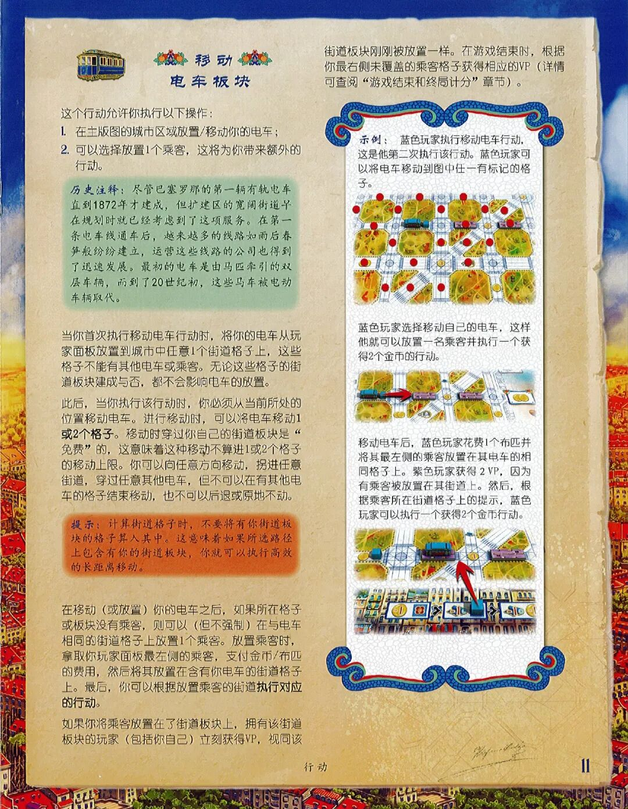
移动 电车
这个行动允许你执行以下操作：
- 在主版图的城市区域放置/移动你的电车；
- 可以选择放置 1 个乘客，这将为你带来额外的行动。
📜 历史注释
尽管巴塞罗那的第一辆有轨电车直到 1872 年才建成，但扩建区的宽阔街道早在规划时就已经考虑到了这项服务。在第一条电车线通车后，越来越多的线路如雨后春笋般纷纷建立，运营这些线路的公司也得到了迅速发展。最初的电车是由马匹牵引的双层车辆，而到了 20 世纪初，这些马车被电动车辆取代。
当你首次执行移动电车行动时，将你的电车从玩家面板放置到城市中任意 1 个街道格子上，这些格子不能有其他电车或乘客。无论这些格子的街道板块建成与否，都不会影响电车的放置。
此后，当你执行该行动时，你必须从当前所处的位置移动电车。进行移动时，可以将电车移动 1或 2 个格子。移动时穿过你自己的街道板块是「免费」的，这意味着这种移动不算进 1 或 2 个格子的移动上限。你可以向任意方向移动，拐进任意街道，穿过任意其他电车，但不可以在有其他电车的格子结束移动，也不可以后退或原地不动。
💡 提示
计算街道格子时，不要将有你街道板块的格子算入其中。这意味着如果所选路径上包含有你的街道板块，你就可以执行高效的长距离移动。
在移动（或放置）你的电车之后，如果所在格子或板块没有乘客，则可以（但不强制）在与电车相同的街道格子上放置 1 个乘客。放置乘客时，拿取你玩家面板最左侧的乘客，支付金币/布匹的费用，然后将其放置在含有你电车的街道格子上。最后，你可以根据放置乘客的街道执行对应的行动。
如果你将乘客放置在了街道板块上，拥有该街道板块的玩家（包括你自己）立刻获得 VP，视同该街道板块刚刚被放置一样。在游戏结束时，根据你最右侧未覆盖的乘客格子获得相应的 VP（详情可查阅「游戏结束和终局计分」章节）。
建造建筑（第 12–13 页）
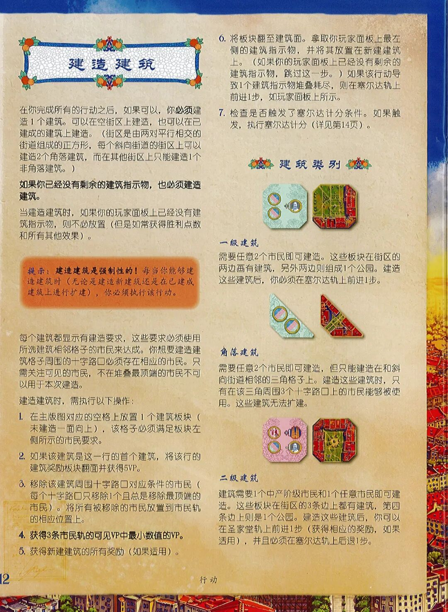
在你完成所有的行动之后，如果可以，你必须建造 1 个建筑。可以在空街区上建造，也可以在已建成的建筑上建造。（街区是由两对平行相交的街道组成的正方形，每个斜向街道的街区上可以建造 2 个角落建筑，而在其他街区上只能建造 1 个非角落建筑。）
如果你已经没有剩余的建筑指示物，也必须建造建筑。当建造建筑时，如果你的玩家面板上已经没有建筑指示物，则不必放置（但是如常获得胜利点数和所有其他效果）。
💡 提示
建造建筑是强制性的！每当你能够建造建筑时（无论是建造新建筑还是在已建成建筑上进行扩建），你必须执行该行动。
每个建筑都显示有建造要求，这些要求必须使用所选建筑相邻格子的市民来达成。你想要建造建筑格子周围的十字路口必须存在相应的市民。只需关注可见的市民，不在堆叠最顶端的市民不可以用于本次建造。
建造建筑时，需执行以下操作：
- 在主版图对应的空格上放置 1 个建筑板块（未建造一面向上），该格子必须满足板块左侧所示的市民要求。
- 如果该建筑是这一行的首个建筑，将该行的建筑奖励板块翻面并获得 5VP。
- 移除该建筑周围十字路口对应条件的市民（每个十字路口只移除 1 个且总是移除最顶端的市民）。将所有被移除的市民放置到市民轨的相应位置上。
- 获得 3 条市民轨的可见 VP 中最小数值的 VP。
- 获得新建建筑的所有奖励（如果适用）。
- 将板块翻至建筑面。拿取你玩家面板上最左侧的建筑指示物，并将其放置在新建建筑上。（如果你的玩家面板上已经没有剩余的建筑指示物，跳过这一步。）如果该行动导致 1 个建筑指示物堆叠耗尽，则在塞尔达轨上前进 1 步，如玩家面板上所示。
- 检查是否触发了塞尔达计分条件。如果触发，执行塞尔达计分（详见第 14 页）。
建筑类别
一级建筑
需要任意 2 个市民即可建造。这些板块在街区的两边画有建筑，另外两边则组成 1 个公园。建造这些建筑后，你必须在塞尔达轨上前进 1 步。
角落建筑
需要任意 2 个市民即可建造，但只能建造在和斜向街道相邻的三角格子上。建造这些建筑时，只有在该三角周围 3 个十字路口上的市民能够被使用。这些建筑无法扩建。
二级建筑
建筑需要 1 个中产阶级市民和 1 个任意市民即可建造。这些板块在街区的 3 条边上都有建筑，第四条边上则是 1 个公园。建造这些建筑后，你可以在圣家堂轨上前进 1 步（获得相应的奖励，如果适用），并且必须在塞尔达轨上后退 1 步。
三级建筑
需要 1 个上层阶级市民和 2 个任意市民即可建造。这些板块街区的 4 个边都是建筑。建造这些建筑后，你可以在圣家堂轨上前进 2 步（获得相应的奖励，如果适用），并获得 7VP。你也必须在塞尔达轨上后退 2 步。
⚠️ 重要
你可以在空地上建造任何等级的建筑。
🔹 示例
蓝色玩家刚刚在主版图上放置了 1 个二级建筑。接着，蓝色玩家将两个相邻的市民放置到相应的市民轨上 A（需注意其中一个必须是中产阶级市民 B）。蓝色玩家在市民轨上获得 7VP C。（玩家不会获得被市民所覆盖的分数！）然后，蓝色玩家可以在圣家堂轨上前进 1 步并且必须在塞尔达轨上后退 1 步。最后，蓝色玩家将建筑板块翻面并从玩家面板上拿取 1 个自己的建筑指示物放在其上。本次建造没有塞尔达计分。
📜 历史注释
塞尔达的计划中最重要的一点就是每个街区只修建两侧，而另外两侧和街区中心将成为公园和所有周围居民的社交空间。不幸的是，大量的市民需要新的住处，土地所有者能够从建筑建造中获得更高的利润，这导致这个设想化为泡影。如今，扩建区上几乎所有的街区都已建满建筑，包括大部分街区的中心。
塞尔达的另一个想法是，所有市民都将拥有相同的基本生活条件，无论他们的财富如何，都住在相同质量的公寓里。这一点再次没有得到尊重，它与巴塞罗那扩张同时期诞生的现代主义风格发生了冲突。现代主义风格的特点之一是非常注重装饰建筑的外立面，清楚地表明居住在该建筑中家庭的财富，这打破了塞尔达追求的同质化风格。
这就是为什么在游戏中建造二级建筑时，你必须在塞尔达轨上后退一步，因为你在三面都修建了建筑，这背离了塞尔达规划的初衷。同时三级建筑有后退两步的惩罚，因为你不仅要在四面建造建筑，还要用现代主义的外立面炫耀所在街区市民的财富。
扩建
你可以在已建成的一级建筑上建造二级建筑，也可以在已建成的一级或二级建筑上建造三级建筑。如果你进行扩建，遵循前文描述的建造建筑的相同过程，但将新的建筑板块放在之前建造的板块上。放置你的建筑指示物时，将其放置在现有的指示物之上并保持顺序。
⚠️ 重要
无法扩建角落建筑和三级建筑。
市民轨与塞尔达计分（第 14–15 页）
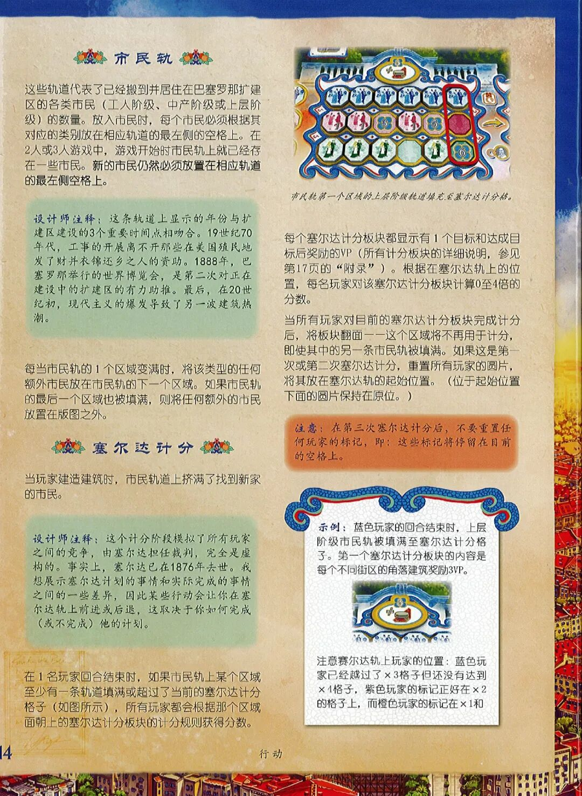
市民轨
这些轨道代表了已经搬到并居住在巴塞罗那扩建区的各类市民（工人阶级、中产阶级或上层阶级）的数量。放入市民时，每个市民必须根据其对应的类别放在相应轨道的最左侧的空格上。在 2 人或 3 人游戏中，游戏开始时市民轨上就已经存在一些市民。新的市民仍然必须放置在相应轨道的最左侧空格上。
🧭 设计师注释
这条轨道上显示的年份与扩建区建设的 3 个重要时间点相吻合。19 世纪 70 年代，工程的展开离不开那些在美国殖民地发了财并衣锦还乡之人的资助。1888 年，巴塞罗那举行的世界博览会，是第二次对正在建设中的扩建区的有力助推。最后，在 20 世纪初，现代主义的爆发导致了另一波建筑热潮。
每当市民轨的 1 个区域变满时，将该类型的任何额外市民放在市民轨的下一个区域。如果市民轨的最后一个区域也被填满，则将任何额外的市民放置在版图之外。
塞尔达计分
当玩家建造建筑时，市民轨道上挤满了找到新家的市民。
🧭 设计师注释
这个计分阶段模拟了所有玩家之间的竞争，由塞尔达担任裁判，完全是虚构的。事实上，塞尔达已在 1876 年去世。我想展示塞尔达计划的事情和实际完成的事情之间的一些差异，因此某些行动会让你在塞尔达轨上前进或后退，这取决于你如何完成（或不完成）他的计划。
在 1 名玩家回合结束时，如果市民轨上某个区域至少有一条轨道填满或超过了当前的塞尔达计分格子，所有玩家都会根据那个区域面朝上的塞尔达计分板块的计分规则获得分数。
每个塞尔达计分板块都显示有 1 个目标和达成目标后奖励的 VP（所有计分板块的详细说明，参见第 17 页的「附录」）。根据在塞尔达轨上的位置，每名玩家对该塞尔达计分板块计算 0 至 4 倍的分数。
当所有玩家对目前的塞尔达计分板块完成计分后，将板块翻面——这个区域将不再用于计分，即使其中的另一条市民轨被填满。如果这是第一次或第二次塞尔达计分，重置所有玩家的圆片，将其放在塞尔达轨的起始位置。（位于起始位置下面的圆片保持在原位。）
⚠️ 注意
在第三次塞尔达计分后，不要重置任何玩家的标记，即：这些标记将停留在目前的空格上。
🔹 示例
蓝色玩家的回合结束时，上层阶级市民轨被填满至塞尔达计分格子。第一个塞尔达计分板块的内容是每个不同街区的角落建筑奖励 3VP。注意塞尔达轨上玩家的位置：蓝色玩家已经越过了 ×3 格子但还没有达到 ×4 格子，紫色玩家的标记正好在 ×2 的格子上，而橙色玩家的标记在 ×1 和 ×2 的格子之间。因此，蓝色玩家在这个板块上计算 3 倍的得分，紫色玩家 2 倍，橙色玩家 1 倍。
蓝色玩家已经建造了 3 个角落建筑（但只有 2 个能用于计分），因此获得 18VP（3VP×2 角落建筑×3）。紫色玩家没有建造角落建筑，因此不得分。橙色玩家只建造了 1 个角落建筑，因此获得 3VP（3角落建筑×1角落建筑×1）〔原书如此，脱「VP」字〕。
最后，蓝色玩家和紫色玩家将他们的标记放回塞尔达轨的起始格子（而橙色玩家已经在起始格子了）。轮到下一名玩家的回合，游戏继续进行。
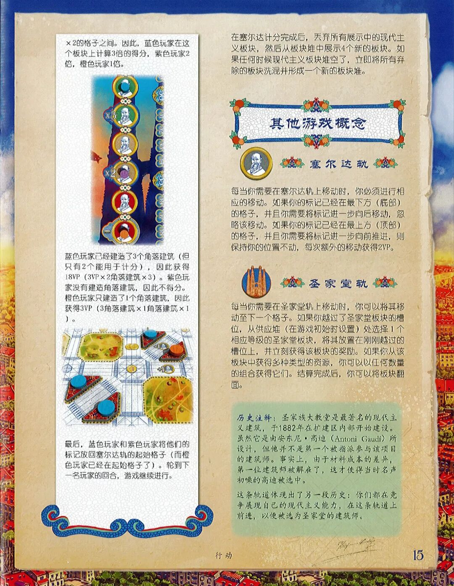
在塞尔达计分完成后，丢弃所有展示中的现代主义板块，然后从板块堆中展示 4 个新的板块。如果任何时候现代主义板块堆空了，立即将所有弃除的板块洗混并形成一个新的板块堆。
其他游戏概念
塞尔达轨
每当你需要在塞尔达轨上移动时，你必须进行相应的移动。如果你的标记已经在最下方（底部）的格子，并且你需要将标记进一步向后移动，忽略该移动。如果你的标记已经在最上方（顶部）的格子，并且你需要将标记进一步向前推进，则保持你的位置不动，每次额外的移动获得 2VP。
圣家堂轨
每当你需要在圣家堂轨上移动时，你可以将其移动至下一个格子。如果你越过了圣家堂板块的槽位，从供应堆（在游戏初始时设置）处选择 1 个相应等级的圣家堂板块，将其放置在刚刚越过的槽位上，并立刻获得该板块的奖励。如果你从该板块中获得多种类型的资源，你可以以任何数量的组合获得它们。结算完成后，你可以将板块翻面。
📜 历史注释
圣家族大教堂是最著名的现代主义建筑，于 1882 年在扩建区内部开始建设。虽然它是由安东尼奥·高迪（Antoni Gaudí）所设计，但他并不是第一个被指派参与该项目的建筑师。事实上，由于材料成本的差异，第一位建筑师被解雇了，这才使得当时名声初噪的高迪被选中。
这条轨道体现出了另一段历史：你们都在竞争展现自己的现代主义能力，在这条轨道上前进，以便被选为圣家堂的建筑师。
游戏结束与终局计分（第 16 页）
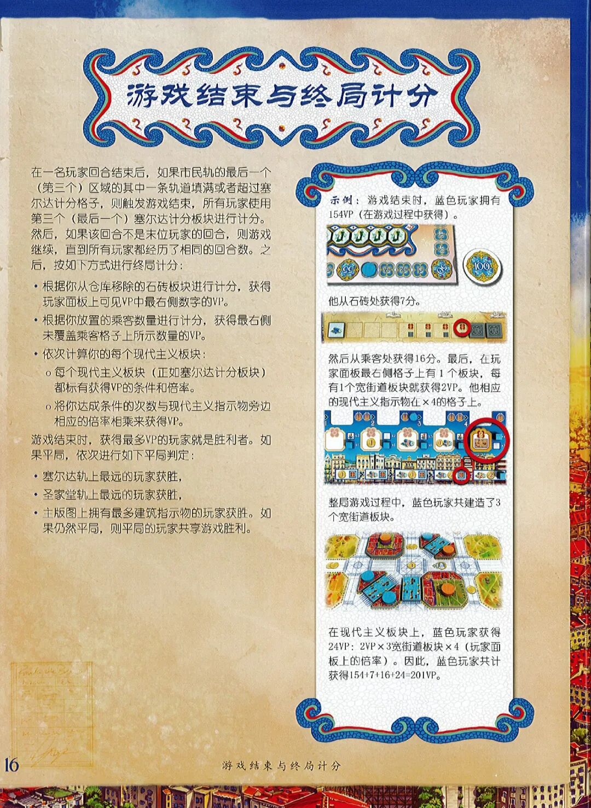
在一名玩家回合结束后，如果市民轨的最后一个（第三个）区域的其中一条轨道填满或者超过塞尔达计分格子，则触发游戏结束，所有玩家使用第三个（最后一个）塞尔达计分板块进行计分。然后，如果该回合不是末位玩家的回合，则游戏继续，直到所有玩家都经历了相同的回合数。之后，按如下方式进行终局计分：
- 根据你从仓库移除的石砖板块进行计分，获得玩家面板上可见 VP 中最右侧数字的 VP。
- 根据你放置的乘客数量进行计分，获得最右侧未覆盖乘客格子上所示数量的 VP。
- 依次计算你的每个现代主义板块：
- 每个现代主义板块（正如塞尔达计分板块）都标有获得 VP 的条件和倍率。
- 将你达成条件的次数与现代主义指示物旁边相应的倍率相乘来获得 VP。
游戏结束时，获得最多 VP 的玩家就是胜利者。如果平局，依次进行如下平局判定：
- 塞尔达轨上最远的玩家获胜，
- 圣家堂轨上最远的玩家获胜，
- 主版图上拥有最多建筑指示物的玩家获胜。如果仍然平局，则平局的玩家共享游戏胜利。
🔹 示例
游戏结束时，蓝色玩家拥有 154VP（在游戏过程中获得）。他从石砖处获得 7 分。然后从乘客处获得 16 分。最后，在玩家面板最右侧格子上有 1 个板块，每有 1 个宽街道板块就获得 2VP。他相应的现代主义指示物在 ×4 的格子上。整局游戏过程中，蓝色玩家共建造了 3 个宽街道板块。在现代主义板块上，蓝色玩家获得 24VP：2VP×3 宽街道板块×4（玩家面板上的倍率）。因此，蓝色玩家共计获得 154+7+16+24=201VP。
附录一：现代主义与塞尔达计分板块（第 17–18 页）
- 在你最长且不间断的垂直或水平街区线上，每有 1 个你的街区获得 2VP。只要街区中至少有 1 个你的建筑指示物，则无论其位置如何，都会视为是你的街区。
- 你的仓库中每有 1 个金币获得 2VP，最多计 5 个金币。
- 主版图上每有 1 个你的交叉路口获得 3VP，该交叉路口必须与至少 3 个建筑相邻。
- 获得等同于你的塞尔达轨上倍率数字 2 倍的 VP（0x、1x、2x、3x 或 4x）。
- 你每建造了一个公用设施便获得 2VP。
- 主版图上每有 1 个你的乘客获得 3VP，该乘客必须与至少 2 个建筑相邻。
- 每有 1 个你移动到顶部位置的现代主义指示物获得 2VP。
- 副版图的人行道上每有 1 个你的石板板块获得 2VP（即：计算你仓库中显示有 VP 图标格子的数量）。
- 你的仓库中每有 1 个布匹获得 2VP，最多计 5 个布匹。
- 在你建造的最长且不间断的同一条窄街道线上（垂直或水平），每有 1 个窄街道板块获得 2VP。（一条街道线的板块上限是 4 个，这也是每条街道的长度。）
- 在你建造的最长且不间断的同一条宽街道线上（垂直或水平），每有 1 个宽街道板块获得 2VP。（一条街道线的板块上限是 4 个，这也是每条街道的长度。）
- 主版图上每有 1 个你的窄街道板块获得 1VP。
- 主版图上每有 1 个你的宽街道板块获得 2VP。
- 主版图上每有 1 个你的乘客获得 2VP。
- 主版图上每有 1 个你的交叉路口获得 2VP。
- 每耗尽 1 个你玩家面板上的建筑指示物堆叠获得 3VP。
- 主版图上每有 1 个你的角落建筑获得 3VP，同一街区的角落建筑不重复计分。
- 你的玩家面板上每有 1 个现代主义板块获得 2VP。
- 主版图上每有 1 个你放置在建筑指示物堆叠底部的建筑指示物获得 2VP，角落建筑上的建筑指示物堆叠不计入其中。（当建筑板块上只有 1 个指示物时，它被视为是位于其「堆叠」的底部和顶部。）
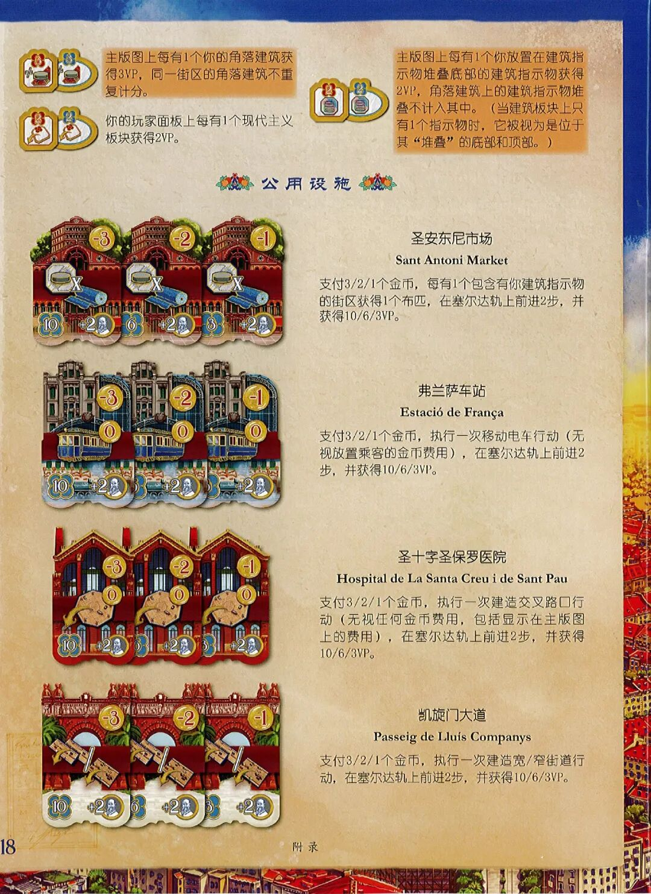
附录二：公用设施（第 18–19 页）
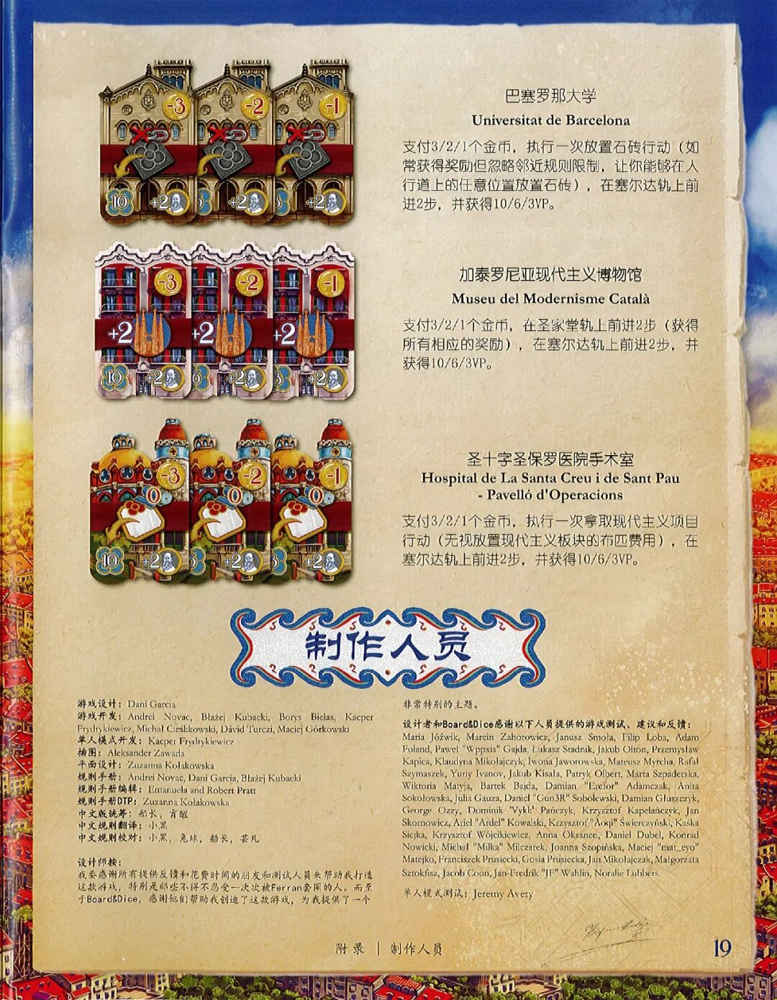
圣安东尼市场（Sant Antoni Market）
支付 3/2/1 个金币，每有 1 个包含有你建筑指示物的街区获得 1 个布匹，在塞尔达轨上前进 2 步，并获得 10/6/3VP。
弗兰萨车站（Estació de França）
支付 3/2/1 个金币，执行一次移动电车行动（无视放置乘客的金币费用），在塞尔达轨上前进 2 步，并获得 10/6/3VP。
圣十字圣保罗医院（Hospital de La Santa Creu i de Sant Pau）
支付 3/2/1 个金币，执行一次建造交叉路口行动（无视任何金币费用，包括显示在主版图上的费用），在塞尔达轨上前进 2 步，并获得 10/6/3VP。
凯旋门大道（Passeig de Lluís Companys）
支付 3/2/1 个金币，执行一次建造宽/窄街道行动，在塞尔达轨上前进 2 步，并获得 10/6/3VP。
巴塞罗那大学（Universitat de Barcelona）
支付 3/2/1 个金币，执行一次放置石砖行动（如常获得奖励但忽略邻近规则限制，让你能够在人行道上的任意位置放置石砖），在塞尔达轨上前进 2 步，并获得 10/6/3VP。
加泰罗尼亚现代主义博物馆（Museu del Modernisme Català）
支付 3/2/1 个金币，在圣家堂轨上前进 2 步（获得所有相应的奖励），在塞尔达轨上前进 2 步，并获得 10/6/3VP。
圣十字圣保罗医院手术室（Hospital de La Santa Creu i de Sant Pau - Pavelló d'Operations〔原书如此〕）
支付 3/2/1 个金币，执行一次拿取现代主义项目行动（无视放置现代主义板块的布匹费用），在塞尔达轨上前进 2 步，并获得 10/6/3VP。
制作人员（第 19 页）
- 游戏设计：Dani García
- 游戏开发：Andrei Novac, Błażej Kubacki, Borys Bielas, Kacper Frydrykiewicz, Michał Cieślikowski, Dávid Turczi, Maciej Górkowski
- 单人模式开发：Kacper Frydrykiewicz
- 插画：Aleksander Zawada
- 平面设计：Zuzanna Kołakowska
- 规则手册：Andrei Novac, Dani García, Błażej Kubacki
- 规则手册编辑：Emanuela and Robert Pratt
- 规则手册 DTP：Zuzanna Kołakowska
- 中文版统筹：船长，宵醒
- 中文规则翻译：小黑
- 中文规则校对：小黑，兔球，船长，芸儿
- 单人模式测试：Jeremy Avery
快速参考（盒内附页）
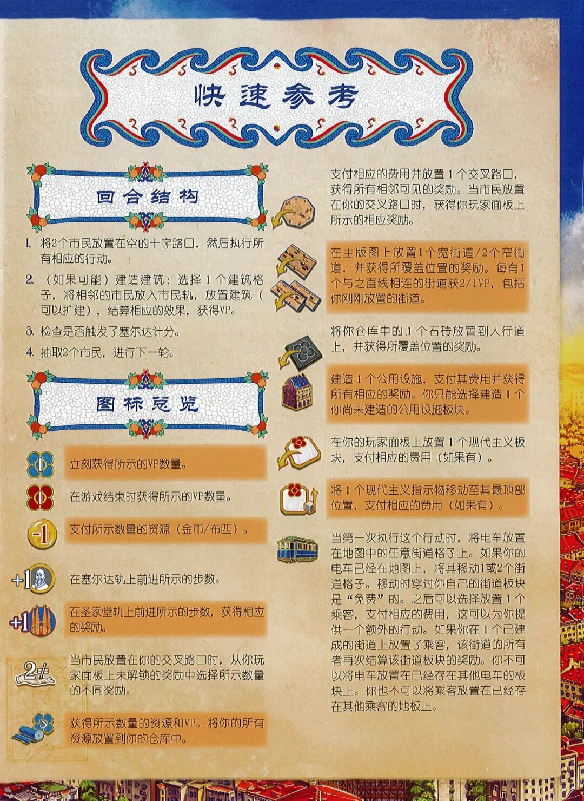
回合结构
- 将 2 个市民放置在空的十字路口，然后执行所有相应的行动。
- （如果可能）建造建筑：选择 1 个建筑格子，将相邻的市民放入市民轨，放置建筑（可以扩建），结算相应的效果，获得 VP。
- 检查是否触发了塞尔达计分。
- 抽取 2 个市民，进行下一轮。
图标总览
- 立刻获得所示的 VP 数量。
- 在游戏结束时获得所示的 VP 数量。
- 支付所示数量的资源（金币/布匹）。
- 在塞尔达轨上前进所示的步数。
- 在圣家堂轨上前进所示的步数，获得相应的奖励。
- 当市民放置在你的交叉路口时，从你玩家面板上未解锁的奖励中选择所示数量的不同奖励。
- 获得所示数量的资源和 VP，将你的所有资源放置到你的仓库中。
行动速查
- 放置交叉路口：支付相应的费用并放置 1 个交叉路口，获得所有相邻可见的奖励。当市民放置在你的交叉路口时，获得你玩家面板上所示的相应奖励。
- 建造街道：在主版图上放置 1 个宽街道/2 个窄街道，并获得所覆盖位置的奖励。每有 1 个与之直线相连的街道获 2/1VP，包括你刚刚放置的街道。
- 放置石砖：将你仓库中的 1 个石砖放置到人行道上，并获得所覆盖位置的奖励。
- 建造公用设施：建造 1 个公用设施，支付其费用并获得所有相应的奖励。你只能选择建造 1 个你尚未建造的公用设施板块。
- 拿取现代主义项目：在你的玩家面板上放置 1 个现代主义板块，支付相应的费用（如果有）。
- 发展现代主义项目格：将 1 个现代主义指示物移动至其最顶部位置，支付相应的费用（如果有）。
- 移动电车：当第一次执行这个行动时，将电车放置在地图中的任意街道格子上。如果你的电车已经在地图上，将其移动 1 或 2 个街道格子。移动时穿过你自己的街道板块是「免费」的。之后可以选择放置 1 个乘客，支付相应的费用，这可以为你提供一个额外的行动。如果你在 1 个已建成的街道上放置了乘客，该街道的所有者再次结算该街道板块的奖励。你不可以将电车放置在已经存在其他电车的板块上。你也不可以将乘客放置在已经存在其他乘客的地板上。